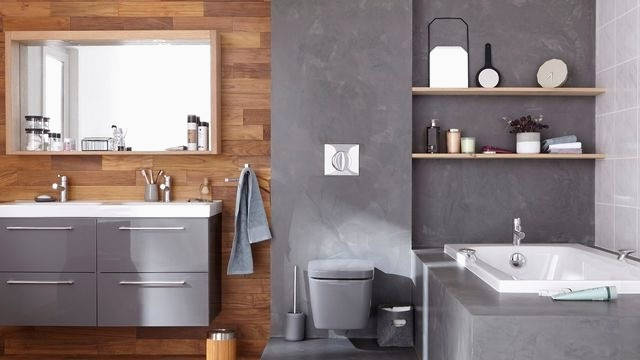
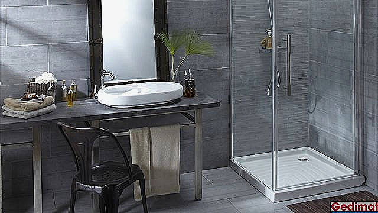
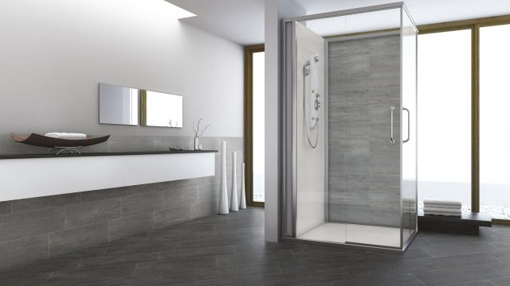
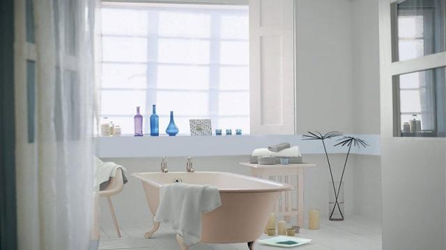
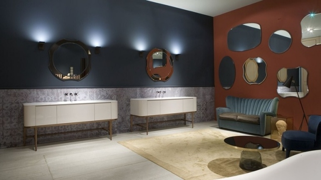
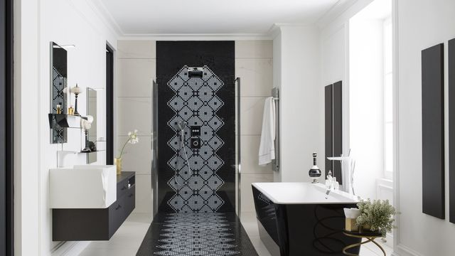

On passe en moyenne deux heures par jour dans la salle de bains. Si l'on ne veut pas se retrouver à faire des agencements dangereux, comme poser son déo à côté du désodorisant pour toilettes (pas sûr que la fraîcheur des Alpes vous aille si bien), mieux vaut soigner l'organisation de la pièce. Et comme salle de bains pratique ne doit pas rimer avec inesthétique, on vous donne tous nos conseils pour allier l'utile à l'agréable !
L'aménagement d'une belle salle de bains n'a rien d'évident. Carrelage, peinture, douche, baignoire, double vasque, lavabo...
Quel équipement de salle de bains est le plus adapté à mes besoins? Et surtout, comment le faire tenir dans l'espace dont je dispose...
Voici tout un tas de bonnes idées pour arranger une salle de bains. Prenez ce dont vous avez besoin et réalisez la salle de bains de vos rêves!
Des plans d'une salle de bains tout confort à la sélection des meubles adaptés, en passant par des conseils sur le choix du revêtement d'une douche à l'italienne,
ou encore de l'installation d'une baignoire balnéo, voici une ribambelle d'idées matérielles ou techniques qui vous aideront sans nul doute à rénover ou concevoir
une belle salle de bains, qu'elle prenne place dans moins de 4 m2 ou qu'elle en occupe plus de 10.
|  |  |  |
|  |  |  |
N'hésitez pas à visiter nos autres pages pour d'autres coseils utiles nottametnt pour les cuisine ou encore sur l'accueil Pour des conseils plus généraux